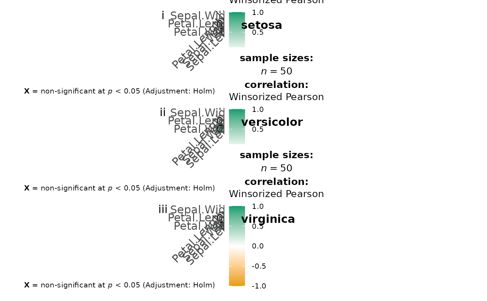

Visualization of a correlalogram (or correlation matrix) for all levels of a grouping variable
Source:R/ggcorrmat.R
grouped_ggcorrmat.RdHelper function for ggstatsplot::ggcorrmat to apply this function across
multiple levels of a given factor and combining the resulting plots using
ggstatsplot::combine_plots.
Arguments
- data
Dataframe from which variables specified are preferentially to be taken.
- ...
Arguments passed on to
ggcorrmatcor.varsList of variables for which the correlation matrix is to be computed and visualized. If
NULL(default), all numeric variables fromdatawill be used.cor.vars.namesOptional list of names to be used for
cor.vars. The names should be entered in the same order.partialCan be
TRUEfor partial correlations. For Bayesian partial correlations, "full" instead of pseudo-Bayesian partial correlations (i.e., Bayesian correlation based on frequentist partialization) are returned.matrix.typeCharacter,
"upper"(default),"lower", or"full", display full matrix, lower triangular or upper triangular matrix.sig.levelSignificance level (Default:
0.05). If the p-value in p-value matrix is bigger thansig.level, then the corresponding correlation coefficient is regarded as insignificant and flagged as such in the plot. Relevant only whenoutput = "plot".colorsA vector of 3 colors for low, mid, and high correlation values. If set to
NULL, manual specification of colors will be turned off and 3 colors from the specifiedpalettefrompackagewill be selected.pchDecides the point shape to be used for insignificant correlation coefficients (only valid when
insig = "pch"). Default:pch = "cross".ggcorrplot.argsA list of additional (mostly aesthetic) arguments that will be passed to
ggcorrplot::ggcorrplotfunction. The list should avoid any of the following arguments since they are already internally being used:corr,method,p.mat,sig.level,ggtheme,colors,lab,pch,legend.title,digits.typeA character specifying the type of statistical approach:
"parametric""nonparametric""robust""bayes"
You can specify just the initial letter.
trTrim level for the mean when carrying out
robusttests. In case of an error, try reducing the value oftr, which is by default set to0.2. Lowering the value might help.kNumber of digits after decimal point (should be an integer) (Default:
k = 2L).conf.levelScalar between
0and1. If unspecified, the defaults return95%confidence/credible intervals (0.95).bf.priorA number between
0.5and2(default0.707), the prior width to use in calculating Bayes factors and posterior estimates. In addition to numeric arguments, several named values are also recognized:"medium","wide", and"ultrawide", corresponding to r scale values of 1/2, sqrt(2)/2, and 1, respectively. In case of an ANOVA, this value corresponds to scale for fixed effects.p.adjust.methodAdjustment method for p-values for multiple comparisons. Possible methods are:
"holm"(default),"hochberg","hommel","bonferroni","BH","BY","fdr","none".packageName of the package from which the given palette is to be extracted. The available palettes and packages can be checked by running
View(paletteer::palettes_d_names).paletteName of the package from which the given palette is to be extracted. The available palettes and packages can be checked by running
View(paletteer::palettes_d_names).ggthemeA
{ggplot2}theme. Default value isggstatsplot::theme_ggstatsplot(). Any of the{ggplot2}themes (e.g.,theme_bw()), or themes from extension packages are allowed (e.g.,ggthemes::theme_fivethirtyeight(),hrbrthemes::theme_ipsum_ps(), etc.).ggplot.componentA
ggplotcomponent to be added to the plot prepared by{ggstatsplot}. This argument is primarily helpful forgrouped_variants of all primary functions. Default isNULL. The argument should be entered as a{ggplot2}function or a list of{ggplot2}functions.subtitleThe text for the plot subtitle. Will work only if
results.subtitle = FALSE.captionThe text for the plot caption.
- grouping.var
A single grouping variable.
- output
Character that decides expected output from this function. If
"plot", the visualization matrix will be returned. If"dataframe"(or literally anything other than"plot"), a dataframe containing all details from statistical analyses (e.g., correlation coefficients, statistic values, p-values, no. of observations, etc.) will be returned.- plotgrid.args
A
listof additional arguments passed topatchwork::wrap_plots, except forguidesargument which is already separately specified here.- annotation.args
A
listof additional arguments passed topatchwork::plot_annotation.
Details
For details, see: https://indrajeetpatil.github.io/ggstatsplot/articles/web_only/ggcorrmat.html
Examples
# \donttest{
# for reproducibility
set.seed(123)
library(ggstatsplot)
# for plot
if (require("ggcorrplot")) {
grouped_ggcorrmat(
data = iris,
grouping.var = Species,
type = "robust",
p.adjust.method = "holm",
plotgrid.args = list(ncol = 1),
annotation.args = list(tag_levels = "i")
)
}

# for dataframe
grouped_ggcorrmat(
data = ggplot2::msleep,
grouping.var = vore,
type = "bayes",
output = "dataframe"
)
#> Warning: Series not converged.
#> Warning: Series not converged.
#> Warning: Series not converged.
#> Warning: Series not converged.
#> # A tibble: 60 × 15
#> vore parameter1 parameter2 estimate conf.level conf.low conf.high pd
#> <chr> <chr> <chr> <dbl> <dbl> <dbl> <dbl> <dbl>
#> 1 carni sleep_total sleep_rem 0.845 0.95 0.520 0.960 1
#> 2 carni sleep_total sleep_cycle 0.204 0.95 -0.529 0.784 0.698
#> 3 carni sleep_total awake -1.00 0.95 -1.00 -1.00 1
#> 4 carni sleep_total brainwt -0.382 0.95 -0.840 0.157 0.895
#> 5 carni sleep_total bodywt -0.379 0.95 -0.729 0.000949 0.960
#> 6 carni sleep_rem sleep_cycle 0.0548 0.95 -0.572 0.741 0.562
#> 7 carni sleep_rem awake -0.848 0.95 -0.966 -0.611 1
#> 8 carni sleep_rem brainwt -0.308 0.95 -0.822 0.365 0.804
#> 9 carni sleep_rem bodywt -0.371 0.95 -0.793 0.149 0.899
#> 10 carni sleep_cycle awake -0.205 0.95 -0.779 0.543 0.690
#> # … with 50 more rows, and 7 more variables: rope.percentage <dbl>,
#> # prior.distribution <chr>, prior.location <dbl>, prior.scale <dbl>,
#> # bayes.factor <dbl>, method <chr>, n.obs <int>
# }